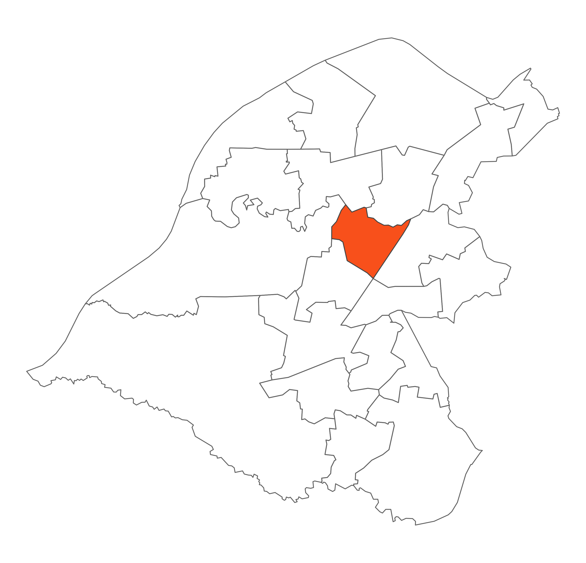

 Ashton upon Mersey is densely populated and the majority of land is under private ownership including the golf course and sports facilities. There is a great deal of green space, albeit the majority is in private ownership, but provides opportunities for residents to access a number of recreational activities. It is a pleasant village with a variety of shops, pubs and restaurants. The boundary of this ward follows the River Mersey and the Carrington Spur with paths running through and adjacent to the private sites providing links to the Trans Pennine Trail.